Vision, Mission & Values
Kyowa Kirin will be a Japan-based Global Specialty Pharmaceutical Company contributing to human health and well-being worldwide through innovative drug discovery and global commercialization, driven by state-of-the art antibody technologies mainly in the core therapeutic areas of oncology, nephrology and immunology.
Kyowa Kirin (Thailand) mission is to make steady advances as we do our utmost to respond to the requests and hopes of patients in Thailand suffering from diseases for which there are currently no adequate treatments, as well as their families and medical professionals. To deliver the fruits of our dedication and commitment to large numbers of patients quickly as possible.
Commitment to Life
“Commitment to Life” is the mission statement of Kyowa Kirin, created when the company was established in October 2008. The statement expresses the strong determination of each employee to devote themselves to saving the lives of all who are suffering from diseases through the development of new drugs.
Commitment to Life
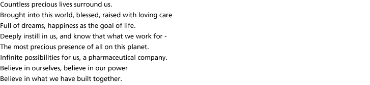
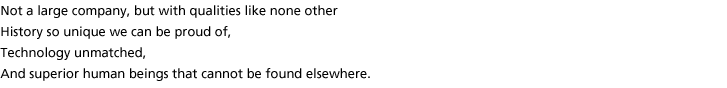
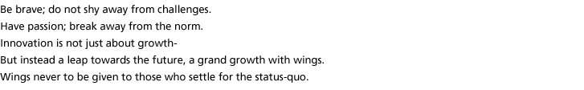
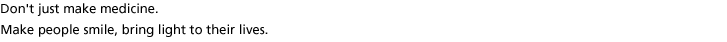
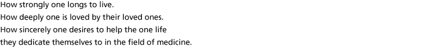
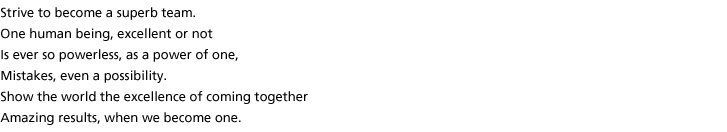
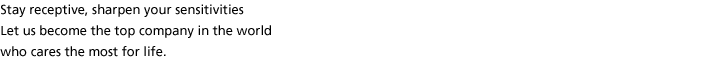
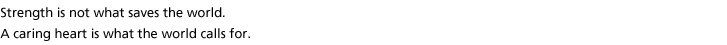
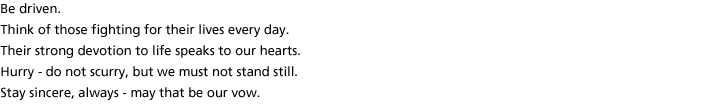
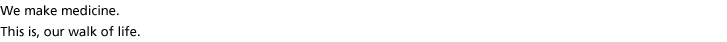

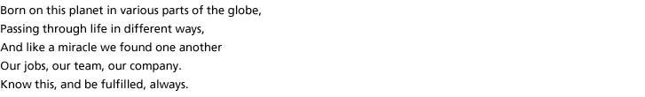
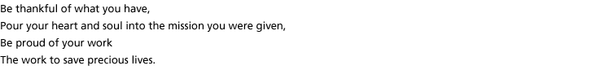
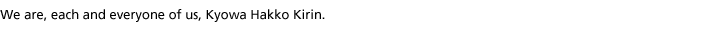
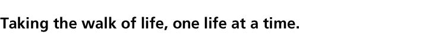